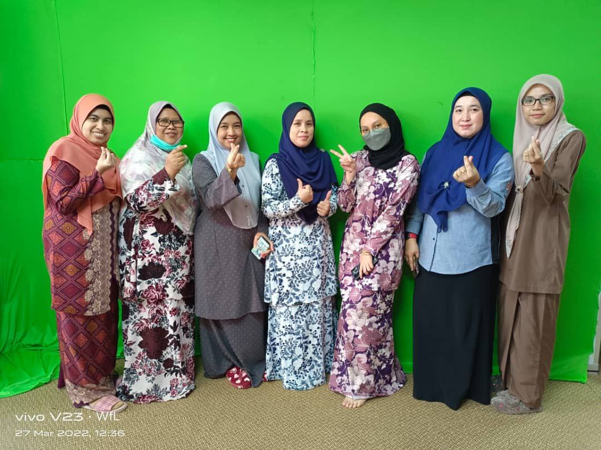

SARA SYAZANA'S EXPERIENCE

I studied Libray Management for my diploma. This course is designed to help students build job-search skills, career objectives, professional abilities, and much more. On top of all these benefits, this course includes a post-session internship in which students may put their academic knowledge and abilities to use in the real world. I'm eager to share my experiences as a Kelantan Public Library intern student. I was really impressed by the warm welcome by Mr Hanif as the supervisor of mine on my first day. I was introduced to every member of staff and their jobs at the library. Working with pleasant people was thrilling and engaging since they all made me feel at ease and welcome. My internship was very incredible. I was t reated fairly and given relevant duties that will help interns grow expertise and learn something new. It is amazing to be a member of the team and to have the opportunity to put our librarianship abilities to the test at the Kelantan Public Library. The beautiful part of the internship was when everyone in the library put their work aside and having a small celebration before Ramadhan began, monthly birthday celebrations, and a goodbye party for fun and celebration. I'll never forget the time I spent working with them. My internship was enjoyable and interesting not only because of the job experiences, but also because of the kind personnel, entertaining events, and warm group culture that I encountered throughout my internship. Aside from the invaluable learning experiences, another highlight was my intern pals. Despite working at various library branches, we frequently convened during our lunch break. We worked hard together and loved each other's company. My internship is coming to an end after six weeks. I've missed my coworkers and pals. I was a little sad to bid farewell when my internship period was over. Such internship chances are uncommon, and you should take advantage of them. As an intern student in the Kelantan Public Library, I enjoy my internship experience and achieve a couple of my goals.